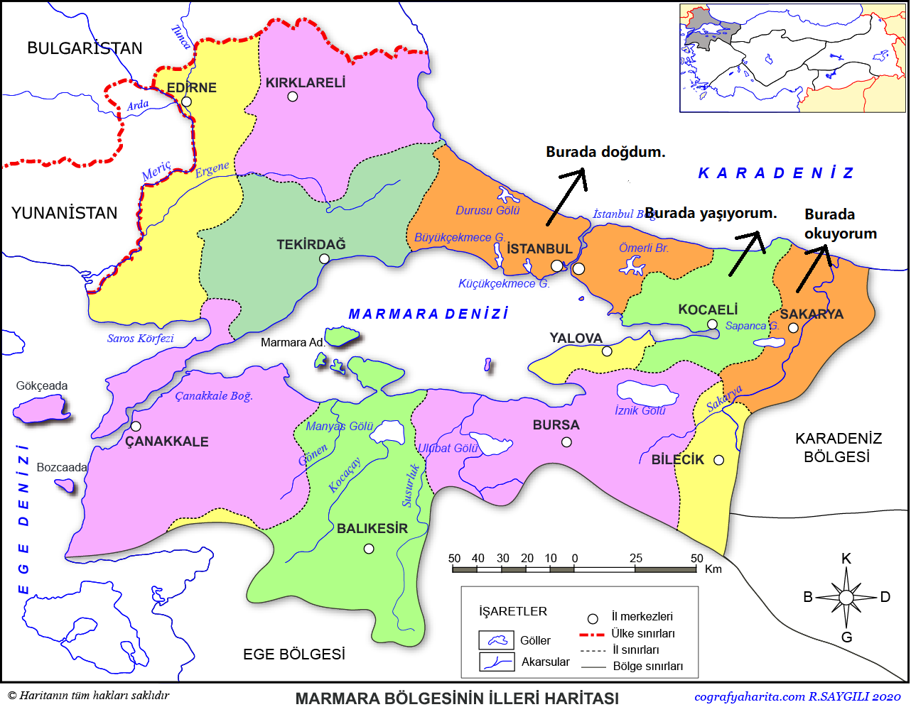
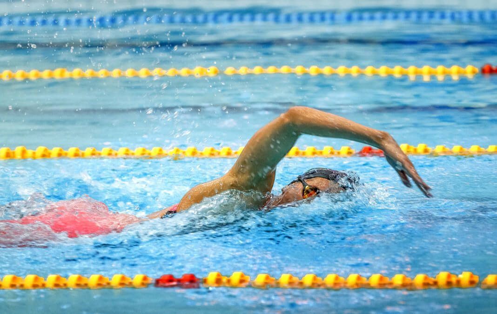

Merhaba Ben Samet Güzel !
2002 yılında İstanbul'da doğdum. Kocaeli'de yaşıyorum ve öğrenciyim.

Sakarya Üniversitesi
2020 yılında Sakarya Üniversitesi'nde Bilgisayar Mühendisliği bölümüne başladım ve şuan akti olarak 1. sınıf öğrencisiyim.

Hobilerim
Liseye başladığımdan beri gerek okulun klüpleri gerekse benim merakım dolayısıyla satranca merak saldım.

Uğraştığım sporlar
Ortaokul çağımda tedavi olarak da başlasam üniversite sınavı zamanına kadar uğraştığım tek spor yüzme oldu.